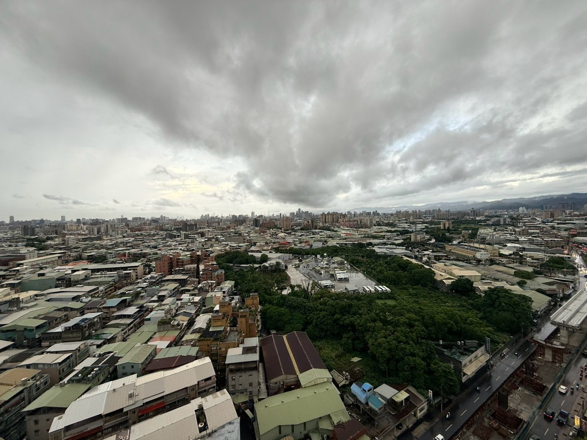

開價 1168 萬｜登記 21.36 坪｜2房1廳1衛

先把兩邊都看過，再決定要不要花時間來一趟。
裝潢可以重做，樓層重做不了。本戶位在地上 23 層大樓的 21 樓，委託資料載明邊間、雙面景觀、採光通風好；影片裡客廳與後陽台兩面都看得到遠景。31 年的屋況你可以慢慢整理，但這個高度與邊間位置，同一個總價帶不容易再找到。
這一項我先講在前面，不等你自己算。登記 21.36 坪、公設 6.22 坪、公設比 29%（依委託資料）。所以你看屋時腳踩得到的空間，比「21 坪」這個數字給你的印象小。294 戶的社區有管理、有中庭，管理費一個月 850 元（依委託資料，實際以管委會為準）——公設比高的另一面，就是這些共用空間。
武林國小、三多國中（學區以完整門牌與當學年度官方公告為準）；龍興傳統市場、黃昏市場；猺寮公園、新北市武器公園；公車 985 中正保安街口，701、712、843 保安中正路口。面臨路寬 12 米。捷運距離本頁不寫——委託方兩份文件都沒有載明公尺數，我不換算、不估、不寫給你看。
屋主目前住在裡面，看屋要提前約；本戶沒有車位（委託資料車位欄與停車方式欄皆空白）；屋況是 31 年的原始狀態，清運、粉刷、水電檢測的錢要先算進去。詳情全部攤在下面「風險・維修・費用・驗屋」那一段。
畫面全部是現場實拍照片，沒有虛擬佈置、沒有修圖，字卡是剪輯留下的。屋況怎麼樣就怎麼給你看。
這是社群版開箱剪輯，不是完整動線影片。屋主目前自住中，完整的逐間動線毛片還沒拍——所以我不假裝這支是完整版。要逐間看細節、看真正的動線，跟我約現場，我陪你走一次，那比任何影片都準。
以下照片為現場實拍，沒有另外修圖。拍攝當天是陰天，實際採光請到現場自己看一次。點照片可以放大看細節。
照片與影片皆為現況實拍，未經修飾。本頁不使用任何虛擬佈置或裝潢示意圖。
這三件事如果先搞錯，後面看什麼都會偏。先把它擺正，再往下看。
「開價 1168 萬，那我準備 1168 萬就好。」
總價只是門票。這間是屋主自住的原始屋況，交屋後的清運、粉刷、水電檢測，加上契稅印花稅代書費規費與火險地震險，還有驗屋，都要算進你的口袋。真正該問自己的是：1168 萬之外，我還拿得出多少。下面「把修繕算進去」那張卡，我直接把數字加給你看。
成交價是多少，自己查最準：內政部不動產交易實價查詢服務網。
「登記 21.36 坪，那我有 21 坪可以住。」
不是。登記 21.36 坪裡面，公設就占 6.22 坪，公設比 29%（依委託資料）。你實際踩得到的室內空間，比 21 坪這個印象小一截。
還有一件事我要主動講，因為你不問也應該知道：委託方交付的兩份文件，主建物與附屬建物（陽台）的分項坪數登載不一致。登記總坪數 21.36 坪、公設 6.22 坪、公設比 29% 這三個數字兩份文件對得上，但分項那一層對不上。所以本頁不採用任何一個版本的分項坪數，也不拿它去乘任何費用——我已經在向委託方確認，確認完會更正這一頁。你要找師傅估價，請等謄本與建物測量成果圖出來再定坪數，不要用我這頁的數字去簽報價單。
面積與範圍最終以地政機關登載為準，可自行至內政部地政司數位櫃臺申請建物謄本與測量成果圖查證。
「21 樓那麼高，是不是水壓不夠、停電就上不去？」
這兩件事都不是傳說，但也不是這棟才有——它是所有高樓層都要付的代價，講因果比較有用：
供水：台灣中高樓層集合住宅多採「屋頂水塔重力供水」或加壓設備供水，水壓夠不夠取決於本戶與水塔的高低差、管路與加壓設備的維護狀況，不是樓層高就一定弱。這一項用現場實測就能得到答案，方法我寫在下面。
停電：停電時電梯停用是全社區的事，但 21 樓的影響確實比低樓層大。社區有沒有發電機、停電時電梯是否有緊急迫降裝置，要問管委會，這是可以問到明確答案的事。
換到的是什麼：視野、採光、通風，以及本戶的邊間位置。這個交換划不划算，你自己決定，我不替你美化任何一邊。
公寓大廈共用設施的管理與維護責任，法條原文見全國法規資料庫（公寓大廈管理條例）。
你現在心裡最想問的其實是一句話：「這間要再花多少才能住？」我不能給你報價，但我可以把每一項缺點攤開，告訴你市場行情大概落在哪個區間、資料是哪一年、哪個網站來的，還有這一項到底該怎麼驗。所有區間僅供參考，實際費用以現場估價為準。每一項最後多一列「買方對策」：這筆錢怎麼算進預算、契約怎麼談、先做哪個、我能幫什麼——全頁合計在下面「把修繕算進去」那張卡。
清運要幾車，取決於實際物量，現場估價才算數。本案是屋主自住中的滿屋現況，先粗抓 2～3 車家戶廢棄物＋數件大型家具家電＝約 $8,000～$25,000 當預算上限（單價見上列）；上列是市場公開區間，不是本案報價。
上列為市場公開報價區間，不是本案報價；實際費用以師傅現場估價為準。
⚠️ 這一條不進本頁「入住總成本」合計，理由講清楚：①衛浴與廚房目前是可以使用的狀態，不是非做不可；②浴室與廚房的實際坪數本頁沒有量測，也不採用委託資料的分項坪數（原因見上面「三個先講清楚的誤會」第二則），沒有可靠的坪數就不該乘出一個假的總額給你。上列是讓你知道量級——「按間計價」那兩筆（$6,000～$20,000／間）只涵蓋防水那一段，不含拆除、貼磚、衛浴設備與清運；真的要整間翻新，加總起來往往是六位數。要做請務必請師傅到現場出逐項報價單。全部區間都是市場公開行情，不是本案報價。完整九工種行情表在修繕報價行情整理頁。
⚠️ 本頁不採用委託資料的室內分項坪數（原因見上面「三個先講清楚的誤會」第二則），所以粉刷金額用「登記 21.36 坪 − 公設 6.22 坪 ＝ 15.14 坪」這個兩份文件都對得上的口徑推算，抓 15 坪估算：低標用 PRO360 乳膠漆兩道 $500～$1,000／坪＋批土研磨 $100～$300／坪；高標用 100室內設計 北部連工帶料 $900～$1,600／坪＋舊屋翻新加價 $300～$800／坪，再加小量廢料清運 $500～$1,000，得出 $9,500～$37,000。這個坪數口徑仍是估算，正式報價請等謄本與測量成果圖出來再定。上列是市場公開區間，不是本案報價。
無本戶單獨的修繕費用，屬交易條件——共用部分的修繕由公共基金或全體區分所有權人依規約分攤，不進本頁修繕合計。下列只是讓你知道量級：
共用部分的費用不是由你單獨負擔。依《公寓大廈管理條例》第 10 條，共用部分的修繕、管理、維護費用由公共基金支付或由區分所有權人按其共有之應有部分比例分擔，但規約另有規定者從其規定——所以要看你們社區的規約怎麼寫，不能一律套比例。實際金額與是否施作以區分所有權人會議與管委會決議為準。這裡列出來，是讓你知道「修繕基金不足」代表的量級。法條原文見全國法規資料庫。
無修繕費用，屬使用限制／交易條件，不進本頁修繕合計。這三項在修繕行情資料裡沒有對應的公開報價，以現場實際洽詢與估價為準——周邊車位月租行情請以停車場業者當下公告為準，我陪你走一趟實際問。這裡不編數字給你。
嫌惡設施這件事，多數人是帶看完回家自己 Google，然後心裡有疙瘩卻不好意思問。所以我先查完寫在這裡。這一段有一項是紅字的，我放在最前面，不藏在最後。
下面所有距離都是直線距離，由新北市政府門牌開放資料的座標（本案門牌座標，資料集編號 168887，內載於 OpenStreetMap 圖資）與 OpenStreetMap 圖資換算，查證日 2026-08-26。
這不是 Google 地圖量的路徑距離，我不會假裝它是。直線距離一定比實際走路的路徑短，中間可能隔著建物或要繞路。要知道你實際會走多遠，請自己在 Google 地圖上量一次——我把來源講清楚，是為了讓你知道這個數字能拿來幹嘛、不能拿來幹嘛。
🚫 本頁只寫公尺，不寫任何以時間表示的距離，那是每個人腳程與車速都不一樣的東西。也 🚫 不對任何一項寫成「附近沒有」——查證有範圍與極限，查不到只能寫「本次外網查證未發現」。
來源：台灣電力公司登載於 OpenStreetMap 的電力設施圖資（operator 標記為台灣電力公司），以 Overpass API 掃描本案座標周邊 400 公尺取得，查證日 2026-08-26；變電所規格對照政府資料開放平臺「台灣電力公司變電所電磁場資訊」。
無修繕費用，屬周邊環境條件，不進本頁修繕合計。這一項不是屋況瑕疵，不需要你花錢修，但它會影響兩件事：你自己住得舒不舒服，以及你將來要轉手時，下一個買方也會查到它。所以它是價格因素，不是維修因素。
來源：OpenStreetMap 圖資，以 Overpass API 掃描本案座標周邊 400 公尺取得，查證日 2026-08-26。土地使用分區的正式認定以地政謄本、不動產說明書與都市計畫主管機關核定為準，可自行至內政部地政司數位櫃臺申請謄本查證。
無修繕費用，屬周邊環境與使用限制，不進本頁修繕合計。但如果謄本上的使用分區與你的預期不同，那會直接影響貸款成數與轉手難易度——那是錢的問題，不是感受的問題，所以要在出價前確認，不是簽約後才發現。
| 項目 | 本次外網查證結果 |
|---|---|
| 殯葬設施 | 200 公尺內未發現。200 公尺外一併告知：樹林區第二公墓約 343 公尺、新北市忠靈祠約 429 公尺。葬儀社／禮儀業者未查得 200 公尺內明確業者與距離 |
| 宮廟・神壇・教會 | 200 公尺內未發現。最近者保安福德宮約 210 公尺——🟡 只超出約 10 公尺，我當成圈內處理，現場實勘請看金爐位置與活動頻率。小型神壇與家庭式佛堂圖資收錄率低，這一項現場實勘不能省 |
| 加油站・加氣站 | 200 公尺內未發現。最近者台灣中油三多站約 399 公尺。加氣站：主管機關資料為動態查詢頁，本次未能取得完整清單，屬「未發現」不等於「沒有」 |
| 電信基地台 | 🟡 本次外網查證未取得明確資料，也沒有取得任何距離。台灣市區基地台多數架在民宅頂樓、公開圖資收錄率極低；權威來源為 NCC 頻率資料庫查詢系統，該系統為互動式地圖逐點查詢、無法匯出。這一項我沒有結論，不寫成「沒有」 |
| 垃圾場・轉運站・回收場 | 200 公尺內未發現。樹林焚化廠與中華路回收廠位於樹林區南側，非本案生活圈 |
| 汙水處理廠・抽水站 | 200 公尺內未發現。實查新北市水利局抽水站開放資料，全市 84 座分布於 14 個行政區，樹林區 0 筆 |
| 特種行業 | 200 公尺內未查得營業登記或明確地址資料。查得一則未指明地址、未指明距離的迴龍地區舊聞，不足以推定與本案 200 公尺圈有關，僅供你判斷是否需現場留意夜間店況 |
| 航空噪音防制區 | ✅ 這一項可以下明確結論：樹林區未列入新北市任何一級航空噪音防制區。公告逐里點名，桃園機場第二級僅林口區下福里，松山機場第一級為三重區 34 里與汐止區 2 里，全公告未出現樹林區 |
| 監獄・看守所・醫院急診・鐵路平交道・車行高架 | 200 公尺內皆未發現。新北矯正機關主要位於土城區；樹林仁愛醫院位於文化街，非本案路口；台鐵縱貫線位於樹林區南側 |
查證方式：以本案門牌座標（來源：新北市政府門牌開放資料）為中心，用 Overpass API 掃描 OpenStreetMap 圖資 400 公尺範圍，並逐項比對政府開放資料與主管機關公告。航空噪音防制區依新北市政府環境保護局公告（新北府環空字第 1100475110 號，110 年 3 月 16 日生效，依噪音管制法第 18 條及機場周圍地區航空噪音防制辦法第 4、8 條），公告全文見新北市政府環境保護局；抽水站資料見新北市各抽水站資訊。查證日 2026-08-26。
本次外網查證未發現其他重大嫌惡設施，以現場勘查與最新不動產說明書為準。
很多人卡在這裡：多花一筆錢驗屋，好像很浪費。這間屋齡 31 年、屋主自住的原始屋況，該看的管線、防水與設備不少——跟買錯之後才發現的代價比，這筆很值得花。本案登記 21.36 坪，剛好落在兩個來源都有列的「21～30 坪」級距，我直接把對應的數字挑出來給你。
| 項目 | 單位 | 價格區間 | 來源與更新年份 |
|---|---|---|---|
| 21～30 坪｜本案 21.36 坪屬此級距 | 戶 | 約 $15,000 | PRO360 驗屋報價頁 2025-06-12 |
| 中古屋 21～30 坪（雙北）｜本案屬此類 | 戶 | $10,000～$15,000 | 鴻宇健康驗屋 2025-07-06 |
| 中古屋（未分坪數） | 戶 | $15,000～$24,000 | PRO360 驗屋報價頁 2025-06-12 |
| 按坪計價 | 坪 | $500～$1,000 | PRO360 驗屋報價頁 2025-06-12 |
| 一般行情（按坪） | 坪 | $500～$1,000 | 鴻宇健康驗屋 2025-07-06 |
| 複驗 | 次 | $4,000～$6,000 | PRO360 驗屋報價頁 2025-06-12 |
| 複驗（按比例） | 次 | 初驗費 5～7 成 | 鴻宇健康驗屋 2025-07-06 |
怎麼取捨：本案 21.36 坪、屋齡 31 年，兩個來源對「21～30 坪」這個級距分別給了「約 $15,000」與「$10,000～$15,000」，數字接近，抓 $10,000～$15,000 是合理的預期。「中古屋（未分坪數）$15,000～$24,000」那一列偏高，是把大坪數也算進去的通則，本頁列出來給你對照與議價用。三站數字不一致全部並列不取平均——差異本身就是資訊。價格區間僅供參考，實際費用以驗屋單位現場報價為準。
這是本頁最該讓你看到的一組數字，我沒有藏。資料來源是內政部實價登錄的官方季度開放資料，查詢日 2026-08-26。
| 成交年月 | 樓層 | 坪數 | 格局 | 總價 | 單價 | 備註 |
|---|---|---|---|---|---|---|
| 113 年 07 月 | 20 樓 | 21.36 坪 | 2房1廳1衛 | 960 萬 | 約 44.9 萬／坪 | 無車位・一般交易 |
| 112 年 03 月 | 3 樓 | 21.36 坪 | 2房2廳1衛 | 686 萬 | 約 32.1 萬／坪 | 無車位・一般交易 |
| 113 年 10 月 | 12 樓 | 19.72 坪 | 2房1廳1衛 | 688 萬 | 約 34.9 萬／坪 | 無車位・陽台外推 |
| 114 年 02 月 | 3 樓 | 19.51 坪 | 2房2廳1衛 | 688 萬 | 約 35.3 萬／坪 | 無車位・陽台外推、其他增建 |
| 114 年 11 月 | 12 樓 | 28.26 坪 | 2房2廳1衛 | 900 萬 | 約 31.8 萬／坪 | 無車位・其他增建 |
| 112 年 09 月 | 8 樓 | 22.08 坪 | 2房1廳1衛 | 720 萬 | 約 32.6 萬／坪 | 🔴 內政部標註「親友、員工、共有人或其他特殊關係間之交易」 |
誠實解讀，一次講完：
開價不等於成交價，也不代表議價空間，最終金額由買賣雙方議定。上表逐筆資料整理自內政部不動產交易實價登錄季度開放資料（查詢日 2026-08-26），單價為總價÷建物移轉總坪數換算，皆為無車位交易。為保護屋主隱私，本頁不列出各筆的完整門牌。更多筆數與最新資料請自行至內政部不動產交易實價查詢服務網查證，以該網站公告為準。
總價是一個數字，能不能扛得住是另一個。先把首付、月付款、月息攤開來看，再決定要不要花時間來看屋。
試算條件：總價 1168 萬、貸款 8 成、30 年期、年利率 2.435%、無寬限期，本息平均攤還。
這些是預設值，不是你的條件。成數、利率、年限每個人不一樣，實際以銀行核准為準——尤其本案屋齡 31 年，核貸年限與成數請先做貸款預審。首付之外還要另外準備契稅、印花稅、代書費、地政規費、火險地震險，以及這間一定會發生的清運與整理費用，本卡都未計入。
按上面的按鈕會帶著本案開價 1168 萬進入試算工具，你可以直接改成新青安 40 年、寬限期或升息後的月付款做壓力測試。工具站的預設是兩段式利率（前 2 年 2.185%、第 3 年起 2.435%），同樣條件算出來是首期月付 35,408 元、跳息後約 36,534 元，跟上面這張卡的 36,605 元差在利率設定不同，不是哪一邊算錯。買房前先做貸款預審，順序不要顛倒——先知道銀行給你多少，再決定看哪個總價帶。
合計怎麼來的：風險 01 清運（2～3 車家戶廢棄物＋數件大型家具家電）$8,000～$25,000、風險 02 水電（專用迴路 2 迴＋局部換管 1 次）$5,000～$12,000、風險 04 全室粉刷 15 坪 $9,500～$37,000。數量是粗抓的假設，每一筆單價與出處都在上面各項「費用區間」裡，三站數字不一致全部並列不取平均。
沒有算進去的是什麼，我也講清楚：風險 03 的衛浴與廚房翻新不進合計（目前可以使用，且本頁不採用委託資料的分項坪數，沒有可靠坪數就不乘出假總額）；風險 05 共用設施修繕由公共基金或全體區分所有權人分攤，不是你單獨負擔；風險 06 沒有車位、公設比與捷運距離屬交易條件，不是修繕費。驗屋 $10,000～$15,000 是另一筆，也沒有算在這張卡裡。
這些是上限粗估，不是報價。實際費用以現場估價為準。想把修繕費一起貸，可向往來銀行詢問裝修／修繕相關貸款方案，條件依各銀行規定。
本案座向朝東、格局圖如上（皆依委託資料），2 房 1 廳 1 衛、屋型方正，委託資料載明邊間、雙面景觀、採光通風好；本戶 21 樓，社區地上 23 層、每層 8 戶、總戶數 294 戶，有電梯。格局圖僅供參考，實際仍以現況格局為主；格局、面積、座向與範圍最終以地政謄本、測量成果圖、不動產說明書及買賣契約記載為準。
格局圖完整放，不遮不糊。看得懂格局，你才知道自己買的是什麼——以下每一項我都直接說，包含不好的那幾項。
格局圖由委託方提供，未經修改。委託方在圖上原本就註明「本格局圖僅供參考，仍需以現況格局為主」「格局圖未依實際比例及座向繪製，其建築面積及登記範圍仍應依地政機關所載為準」。格局、面積與範圍最終以地政謄本、建物測量成果圖、不動產說明書及買賣契約記載為準。
進門在圖的左下方，正對客廳。客廳是全戶最大的一塊，右側整面是窗——影片與照片裡看到的 21 樓視野就是從這一面來的。廚房在中央偏上，往上直接接陽台。兩間臥室分別配置在左上與右上，各自獨立，不用穿過一間房才能到另一間。浴室在左側、緊鄰左上那間臥室與廚房。
陽台只有一座，位在兩間臥室中間、廚房上方，從廚房進出。照片裡的鐵花格柵陽台就是這一座，它同樣看得到遠景。
簡單講：公私分離做得出來——客廳與廚房是公領域、兩間臥室各自獨立，格局方正、沒有畸零角落，也沒有把坪數浪費在長走道上。這是委託資料寫「格局方正」的實際樣子。
| 項目 | 坪數 | 說明 |
|---|---|---|
| 登記總坪數 | 21.36 坪 | 依委託資料，兩份文件一致；面積以地政機關登載為準 |
| 共用部分（公設） | 6.22 坪 | 公設比 29%，兩份文件一致 |
| 主建物＋附屬建物（陽台） | 兩份文件登載不一致 | 本頁不採用任一版本，請以地政謄本與建物測量成果圖為準 |
| 土地面積 | 1.35 坪 | 依委託資料 |
為什麼要把這件事寫在這裡：因為你找師傅估價時，第一句話就是「幾坪」。委託方交付的兩份文件在「主建物與附屬建物分項坪數」這一格對不上，我已經在向委託方確認，確認完會更正這一頁。在那之前，本頁不拿任何一個版本去乘任何費用——上面「風險 04」的粉刷估算，用的是「登記 21.36 坪 − 公設 6.22 坪 ＝ 15.14 坪」這個兩份文件都對得上的口徑，抓 15 坪估算，而且我把這件事註明在那一段裡。
正式報價請等謄本與測量成果圖出來再定坪數，也不要拿登記總坪數 21.36 坪去乘——那 6.22 坪的公設不在你家裡，報錯會多花錢。
這張格局圖本身沒有畫指北標示，委託方也在圖上註明「未依實際比例及座向繪製」。委託資料的方位欄載明朝東，但這一項尚未經地政謄本或現場實測複核，我不把它當成已確認的事實寫給你——帶看時我會陪你在客廳窗前用手機指北針再核一次，兩邊對得上才算數；對不上，以現場與官方圖為準，我會立刻更正這一頁。
座向、格局圖與範圍最終以地政謄本、建物測量成果圖、不動產說明書及買賣契約記載為準。
以下為委託資料所載的機能點，實際路線與距離請以 Google 地圖確認。
這幾件是決定要不要買的關鍵，我整理成可以直接照著做的版本。
看到這裡你大概心裡有數了。接下來的順序很重要——順序錯了，會花冤枉錢。
本案屋齡 31 年，屋齡加貸款年限銀行內部通常有上限，成數與年限會直接改變你的月付款。先問過至少兩家銀行，知道銀行給你多少，再決定要看哪個總價帶的房子。
怎麼做：準備身分證、最近一年的收入證明或扣繳憑單、勞保投保明細、名下貸款與信用卡的現況，帶著本案的總價與屋齡（1168 萬、31 年），直接約銀行房貸專員談。要問清楚這四件事：成數、貸款年限、利率（含是否為兩段式）、有沒有寬限期。
預審不等於正式申貸，但多數銀行會請你授權查詢聯徵，查詢紀錄會留存，短期內找太多家是會被後面的銀行看到的——所以先挑兩家談就好，不要一次跑五家。是否收取估價費或開辦費依各家銀行規定不同，談之前先問。
如果你能接受自己發包整理：重點放在「清運要幾車、水電要不要重拉、粉刷要做幾坪、衛浴要不要動」，這四項決定你的整理預算，也決定你的出價。順便把水壓與排水測一次，那是 21 樓最該當場驗的。
如果你要買了就能入住：那要先誠實面對——這間是屋主自住的原始屋況，屋主要先搬，中間一定有一段整理期。時間成本（租金或通勤）也要算進總成本，再回頭比同總價帶的整理好可入住物件，哪個對你划算。
兩條路沒有對錯，怕的是心裡想著第一條、生活節奏卻是第二條。屋主自住中，看屋一定要提前約，我幫你排時間。
建物與土地謄本、建物測量成果圖（這一份對本案特別重要，它會解決上面講的分項坪數不一致問題）、不動產標的現況說明書（賣方逐項勾註屋況的揭露表）、社區最近一次區分所有權人會議紀錄。前三份是我的工作，我會主動調好給你，不用你開口要；第四份要向管委會或總幹事索取，帶看那天我陪你一起問。
你也可以自己來：謄本與測量成果圖從內政部地政司數位櫃臺線上申請就有，不用透過任何人。我把路徑寫出來，是因為你有權自己查證，不是只能相信我說的。
看完這四份，加上上面那張同社區成交表，你出的價才有依據，不是憑感覺砍。
這幾題是看完資料之後最常被問到的。答案都寫在這裡，不用等私訊。
這一題我不迴避，因為數字是我自己放上去的。開價不等於成交價，也不代表議價空間，最終金額由買賣雙方議定。委託方交付的內部價格資訊我不會外流，那是我對委託人的義務。但「這價格合不合理」這題該怎麼判斷，我可以完整教你：
第一步：先把可比的那一筆釘住。113 年 07 月、同一棟、21.36 坪、2 房 1 廳 1 衛、20 樓、無車位、960 萬。這是本案最貼的對照組，樓層只差一層。
第二步：把不可比的差異一項一項列出來。①時間差約兩年，這段期間的行情變化你要自己判斷；②實價登錄不揭露屋況，那一戶當時是整理過還是原始狀態，資料上看不出來——如果它當時已經整理好，那本案的原始屋況就要再往下扣一筆整理費；③座向與邊間位置是否相同，資料上也看不出來。
第三步：把整理費扣回去。本頁「把修繕算進去」那張卡已經幫你抓了清運＋水電＋粉刷上限約 7.4 萬（衛浴翻新另計）。這筆是你買進之後才會花的錢，要從你願意出的價裡先扣掉。
第四步：用你的月付款倒推。先確定你每個月付得起多少，回推總價上限，再跟前面三步的數字對照。四個數字裡最小的那個，就是你的出價天花板。
出價是你的權利，我的工作是把資料備齊、把不利的先講完，讓你算得出來，不是替你決定金額，也不會催你加價。
這兩件事都是真的要問，但都是可以問到明確答案的事，不是玄學。
水壓：取決於本戶與屋頂水塔的高低差、管路狀況與加壓設備的維護，不是樓層高就一定弱。看屋當天把所有水龍頭同時打開，就有答案。驗屋時也可以請驗屋單位測一次。
停電：停電時電梯停用是全社區的事，但 21 樓受到的影響確實比低樓層大。要問管委會三件事：社區有沒有發電機、停電時電梯有沒有緊急迫降裝置、社區有幾部電梯（其中一部停機保養時另一部撐不撐得住）。294 戶的社區通常有專職總幹事，這些問得到。
還要問的：消防安全設備檢修申報紀錄。這一項跟你的居住安全直接相關，尤其在 21 樓。
這幾題我會陪你一起問管委會，答案要用問到的為準，不是用我這一頁寫的為準。
依委託資料，本案登記 21.36 坪中公設占 6.22 坪。這個比例在 31 年的中高樓層社區大樓算是中上——它換到的是電梯、管理、中庭與公共通道，這些在本頁「屋況直球」那一段的照片裡都拍給你看了。
要一起看的是兩件事：①管理費一個月 850 元（依委託資料，實際以管委會為準），294 戶的社區收這個金額，修繕基金夠不夠因應外牆、電梯、水塔的共用修繕，要向管委會確認；②公設比高低本身不是好壞，它決定的是你每一坪的錢有多少落在自己家裡——出價時把這件事放進去算就好。面積與範圍最終以地政機關登載為準。
因為委託方交付的兩份文件都沒有載明公尺數。重點說明欄只寫「鄰近迴龍捷運站」，就這五個字，沒有距離。
我可以自己去 Google 地圖量一個數字寫上來，但那樣你就沒辦法分辨「這是委託資料上的事實」還是「這是仲介自己量的」。所以本頁的做法是：沒有可查證的官方數字，就完全不寫——不換算、不估，也不用任何以時間表示的說法帶過去。你要知道實際距離，自己在 Google 地圖上量一次，那比我寫什麼都準。
日常交通可以先看委託資料上有的公車站：985（中正保安街口），701、712、843（保安中正路口），面臨路寬 12 米。
不是有問題，是兩份文件對不上，我不選邊寫給你。
登記總坪數 21.36 坪、公設 6.22 坪、公設比 29%、土地面積 1.35 坪這四個數字，兩份文件是一致的。但「主建物與附屬建物（陽台）」的分項坪數，兩份對不上。我已經在向委託方確認，確認完會更正這一頁。
在那之前，本頁不採用任何一個版本，也不拿它去乘任何費用。正確的做法是等地政謄本與建物測量成果圖——那是官方版本，簽約前本來就要調，我會主動幫你調好。你也可以自己上內政部地政司數位櫃臺申請。
我把這件事寫出來，而不是挑一個看起來比較漂亮的數字填上去，理由很簡單：你拿著錯的坪數去簽報價單，多花的錢是你的，不是我的。
買方這一端常見的有：契稅（向地方稅捐稽徵處申報，稅基是房屋評定現值，不是成交價）、印花稅、地政規費與登記費、代書費（地政士服務報酬，市場行情依案件複雜度不同）、火險與地震險（辦房貸的銀行通常要求投保）。若有貸款，還有設定規費與銀行相關手續費。
這一筆最常被漏掉，因為它不在你跟屋主談的那個數字裡——談完價格才冒出來，最傷。我不在這裡寫金額，是因為契稅的稅基是房屋評定現值，每一戶都不一樣，我編一個數字給你只會害你抓錯預算。但你不用等到簽約才知道，三步就問得出來：
一、拿到房屋評定現值。向屋主索取最近一期的房屋稅繳款書，上面就有這個數字——這件事我來要，你不用開口。
二、用它去試算契稅。拿著這個數字打給新北市政府稅捐稽徵處（或用該處網站的稅額試算），問「這個評定現值的買賣契稅是多少、什麼時候要申報」，他們會直接告訴你金額與期限，這是最準的答案。稅率與申報期限的法條原文在全國法規資料庫（契稅條例、印花稅法）可以自己對。
三、請代書先給費用明細。代書費、地政規費與登記費、設定規費不是稅，是服務與行政費用，可以在簽約前就請地政士報一張明細出來，貨比兩家也可以。火險與地震險由承貸銀行配合的保險公司報價，保費依保額而定。
實際稅額以新北市政府稅捐稽徵處核定為準。簽約後代書也會列一張完整的費用明細，但那時候你已經沒有議價空間了——所以要提前問。
阿宏這邊常用的稅務整理放在房地稅務常見問題，賣方端的稅在那裡講得比較細。
不一定要。屋主現在就住在裡面，衛浴是能用的——問題是它是 31 年的原始配置，你要不要花錢升級，那是選擇題不是必答題。
我的建議是先住一段時間再決定，因為衛浴翻新一旦動到防水就是連工帶料的大工程，順序是拆除→防水→泥作貼磚→設備安裝，中間不能跳。但有一件事不能等：先確認有沒有滲漏——看屋當天就要看樓下天花板有沒有水痕，驗屋時指定水分偵測器量浴室四周牆體。舊是選擇題，漏是必答題，兩件事不要混。
費用量級在上面「風險 03」那一段列得很清楚，全部附出處：只算防水那一段是 $6,000～$20,000／間（三家報價並列，其中一家的資料是 2023-11 的舊值我也標了），但那不含拆除、貼磚、設備與清運，真的整間翻新往往是六位數。本頁不乘出一個假的總額給你，因為浴室的實際坪數沒有量、委託資料的分項坪數又對不上。要做，請師傅到現場出逐項報價單，我可以代約並幫你比價。
先把數字擺正：登記 21.36 坪扣掉公設 6.22 坪，室內約 15 坪出頭（精確分項要等謄本，原因見上面那題）。格局是兩房一廳一衛加獨立廚房，方正、公私分離、沒有畸零角落。以一到兩人自住來說空間是夠的。
但要誠實講兩件事：只有一套衛浴，兩個人作息時間重疊會卡；收納空間有限，格局圖上沒有獨立儲藏室，15 坪出頭要住得舒服，收納一定要在整理時就規劃進去。如果你的家庭成員未來會增加到三人以上，這間會在幾年內就變小——那不是它的問題，是產品定位的問題，先想清楚比較好。
這是很多人忽略掉的成本。以本案的狀況（屋主要先搬、你再清空、水電到位、然後粉刷），你在交屋後到入住前這段期間，房租或跟家人同住的安排要先想好，而且要把那段時間的房租＋房貸雙付算進總預算。
工期長短取決於你要做到什麼程度，這一題沒有標準答案，等師傅現場估價才知道。但預算要抓，不要等到交屋才發現兩邊都要付。
屋齡加貸款年限銀行內部通常有上限，會影響核貸年限與成數，但每一家銀行的標準不同，也跟你的收入、負債與信用條件有關。這一題沒有通用答案，做過貸款預審才會知道你的數字。實際成數、利率與月付以承貸銀行核准為準。
我不會對未來的價格做任何預測，那不是我能承諾的事。可以客觀講的是這間的條件在轉手時分別代表什麼：低總價帶、電梯、21 樓高樓層、邊間雙面採光、方正兩房——這些條件對應的接手客群是首購與小家庭；反過來，沒有車位、公設比 29%、屋齡會再往上走、只有一套衛浴，這些條件在轉手時同樣會被下一個買方拿出來談。
上面那張同社區成交表已經告訴你一件事：同一棟裡，樓層是有價差的。至於這個價差未來還在不在，我不預測。真正影響好不好賣的，是你買進的價格與屋況整理的品質——這兩件事在你手上，不在市場手上。
因為屋主目前自住中，完整的逐間動線毛片還沒拍。那支 44 秒的是社群版開箱剪輯，畫面全部是現場實拍照片。與其剪一支看起來像完整帶看的影片給你，不如老實說這件事，然後約你到現場走一次。屋主自住中，看屋要提前約，跟我說時段我幫你排。
不用打字整理，填完會自動產生需求摘要，可以直接帶進我的官方 LINE。就算這間不合，我也能照你的條件幫你找。
能接受屋主自住的原始屋況、沒有車位、公設比 29%，也自己算過整理費，這間才排得進你的看屋名單。
| 資訊類別 | 以什麼為準 | 去哪裡查證 |
|---|---|---|
| 面積・坪數・樓層 | 地政機關登載 | 建物與土地謄本、測量成果圖 |
| 產權・限制登記・他項權利 | 登記簿謄本記載 | 地政司數位櫃臺申請謄本 |
| 土地使用分區 | 謄本記載與都市計畫主管機關核定 | 地政謄本、不動產說明書、新北市都市計畫查詢 |
| 法定用途・增建・違建 | 建照使照核准內容與查報紀錄 | 新北市建管便民服務網、違章建築查報系統 |
| 屋況・設備・瑕疵 | 現場實際勘查 | 帶看現場逐項確認＋不動產標的現況說明書 |
| 周邊嫌惡設施 | 現場實際勘查＋主管機關資料 | 現場走一次、台電與各主管機關公開資料、不動產說明書 |
| 成交行情 | 內政部實價登錄揭露資料 | 不動產交易實價查詢服務網 |
| 稅費金額 | 稽徵機關核定 | 國稅局、地方稅捐稽徵處 |
| 貸款成數・利率・年限 | 金融機構核定 | 承貸銀行辦理貸款預審 |
| 學區 | 當學年度官方公告 | 各縣市教育局學區查詢 |
| 公共設施・管理費・修繕基金 | 管委會公告與區分所有權人會議決議 | 向社區管委會或總幹事確認 |
這一頁能幫你把方向抓對，但每個人的狀況都不一樣。真的要動手之前，還是找專業的人幫你看過一次，那一趟不會白跑。
這間房子的數字很簡單：1168 萬、21 樓、地上 23 層電梯大樓、登記 21.36 坪、公設比 29%、座向朝東、沒有車位。真正決定你要不要買的，是屋主自住留下來的原始屋況、清運與粉刷的整理成本、200 公尺內那幾座台電的塔，還有同一棟 20 樓兩年前那筆 960 萬的成交紀錄。
這幾件事我沒有藏起來，是因為藏了也沒有用——你上實價登錄一查、到現場一抬頭，全部都會看到。與其讓你事後發現，不如我先講完。
這間值不值得買，答案不在我這裡，在你把整理費算完、把那幾筆成交看完之後。
買對是資產，買錯是壓力。
願你這一次，買的是資產。
大樓跟公寓不一樣，除了戶內，共用的部分更要看——而且你住 21 樓，共用設施出問題你最有感。
本頁不對房屋結構安全做任何保證，建議正式簽約前自費請驗屋公司或結構技師到場複檢一次。
高樓層有它的代價，但每一項都問得到明確答案。這五題帶到現場問，不要憑感覺。
換到的是視野、採光、通風與邊間位置。這個交換划不划算你自己決定，本頁不替你美化任何一邊，也不對結構或設備安全做任何保證。
勾起來代表這一項你已經確認過了。沒勾的，就是你現在還不知道的事。你的勾選會留在這台手機裡。
還有 12 項沒確認。全部確認完之前，先不要出價。
謄本、測量成果圖、違建查詢、現況說明書這幾項本來就是我的工作，你不用自己跑。要我先幫你調，跟我說一聲就好。
以下是中古屋的通用風險訊號，不是針對本案的判定。出現任何一項，先暫停，找專業的人到現場看過再說。
牆面細裂多半是粉刷層問題，出現在樑、柱、剪力牆上的裂縫性質完全不同，要結構技師判斷。
產權問題不會因為屋況單純就消失。先請地政士協助釐清清償與塗銷順序。
修復責任與費用要白紙黑字，口頭承諾在交屋後沒有用。
先請地政士或建管單位協助釐清再往下談，不要自己猜測解讀。這一項在住宅與輕工業混合的街廓要特別看。
合理的委託應該可以出示正式文件，遇到刻意迴避要多問一句為什麼。
現場隔間如果跟官方登載資料對不起來，先請地政士或建管單位協助釐清再往下談。